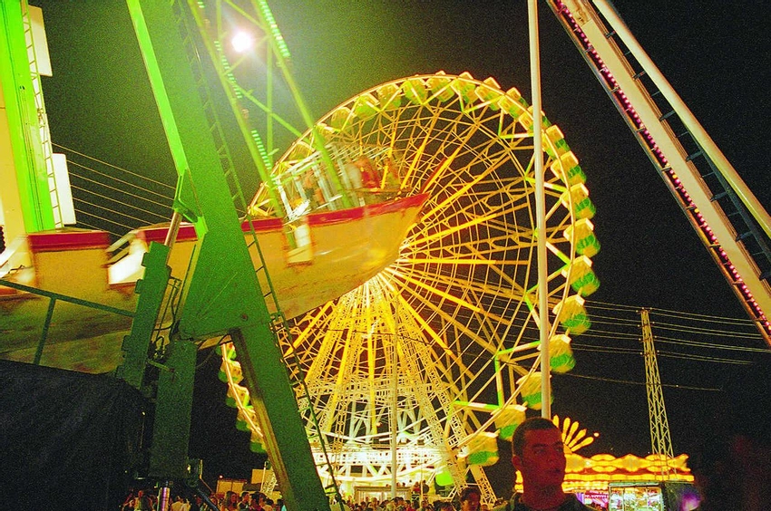
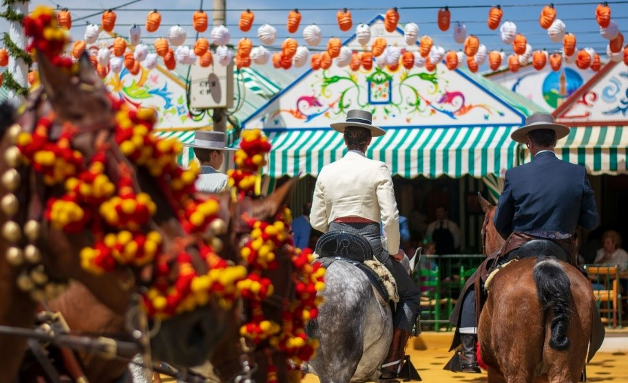

La Feria de Cádiz tiene sus raíces en el siglo XVIII, celebrándose inicialmente en honor a la Virgen del Rosario, patrona de la ciudad. Con el tiempo, la feria se transformó en un evento de carácter popular y festivo, consolidándose en el siglo XIX cuando las primeras casetas se instalaron en la Plaza de las Flores. A día de hoy, la feria se celebra a finales de junio o principios de julio, marcando el inicio del verano con el calor característico de la ciudad. La fiesta se desarrolla principalmente en el Parque Genovés y alrededores, donde las casetas se llenan de música, baile y gastronomía local. La "chirigota", expresión musical y humorística de la ciudad, es uno de los grandes atractivos, mientras que el pescaíto frito, las tortillitas de camarones y el paseo en barca por la bahía son imprescindibles en la feria gaditana. Este evento es una celebración vibrante, donde la alegría y el color son los protagonistas, atrayendo cada año a miles de turistas a disfrutar del espíritu único de Cádiz.
El pescaíto frito y la torta de acelga son clásicos de la feria, acompañados de manzanilla en todos los puestos.
Las carpas ofrecen música en vivo, especialmente de la "bahía", creando un ambiente festivo y alegre.
La influencia del carnaval se nota en la feria, con disfraces y máscaras que aportan color y diversión.
El "rebujito" y el vino de Jerez son imprescindibles para disfrutar de la feria, especialmente en las casetas.
El desfile de caballos y jinetes ataviados tradicionalmente es uno de los momentos más destacados de la feria.
Las banderas de las peñas y la tradición ecuestre de Jerez son un símbolo distintivo de la feria.
|  |
La Feria de Jerez es un evento vibrante lleno de tradiciones ecuestres, música flamenca y, por supuesto, vinos y rebujitos. Uno de los momentos más destacados es el "Paso del Caballo", un desfile donde los jinetes lucen sus caballos de pura raza, mostrando una destreza impresionante. Además, las casetas se llenan de alegría con el toque inconfundible del flamenco, creando una atmósfera única. Los más pequeños también disfrutan de la feria en el Espacio Infantil, con actividades adaptadas especialmente para ellos, lo que convierte este evento en una fiesta familiar para todos. |
|
Otro de los momentos más esperados es el "Rebujito", la bebida tradicional de la feria, combinada con tapas típicas y el buen vino de Jerez. Las "Banderas" de las peñas, que adornan la feria, son símbolos de la tradición jerezana, y las competiciones ecuestres, como el Concurso de Enganches, muestran la importancia de la equitación en la ciudad. Y al final de cada jornada, los Fuegos Artificiales iluminan el cielo jerezano, poniendo el broche final a una fiesta llena de color y emoción. |
 |